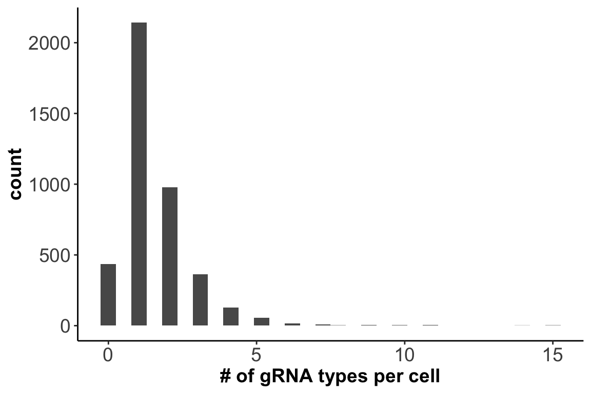

CROP-seq is a technique that combines pooled CRISPR screening with droplet-based single-cell RNA sequencing, and can directly measure guide RNA expression as part of the transcriptome readout from thousands of cells.
In our study, we try to use CROP-seq to confirm the regulatory functionality and putative cis-target genes for a set of genomic loci of interest.
We used human induced pluripotent stem cell (iPSC)-derived neurons as a neurodevelopmental model. First, we conducted ATAC-seq on each cell line and obtained a list of allele-specific open-chromatin (ASoC) SNPs in each cell type. Next, we assessed the utility of these ASoC SNPs in inferring functional noncoding risk variants for neuropsychiatric disorders. Our enrichment analysis results suggest that among schizophrenia associated variants, the ones showing ASoC are more likely to be causal functional variants.
We thus intersected the ASoC SNPs with the schizophrenia GWAS risk SNPs, and for the top 21 ASoC SNPs, we assessed their functionality and cis-regulated genes using CROP-seq.
We focused on iPSC-derived neural progenitor cells (NPC). For CRISPRi, we designed 3 guide RNA sequences inhibiting the transcriptional activity near the target locus for each of the 21 SNP sites of interest. We also included 5 negative control gRNAs targeting green fluorescent protein-GFP.
library(ggplot2)
library(knitr)
library(kableExtra)
library(gridExtra)
options(stringsAsFactors = F)
snp.lst <- read.table('~/Downloads/ASoC/data/scRNA_seq_SNP_list.txt',sep = '\t',
header = F,col.names = c('rsID','gene locus'))
kable(snp.lst,caption = 'SNP list') %>% kable_styling() %>% scroll_box(width = "90%", height = "400px")| rsID | gene.locus |
|---|---|
| rs7148456 | BAG5 |
| rs12895055 | BCL11B |
| rs7170068 | CHRNA3 |
| rs520843 | GALNT10 |
| rs12716973 | KCTD13 |
| rs2192932 | KMT2E |
| rs17200916 | LOC105376975 |
| rs1198588 | miR137 |
| rs324017 | NAB2 |
| rs4151680 | PCDHA1 |
| rs301791 | RERE |
| rs324015 | STAT6 |
| rs9882911 | TRANK1 |
| rs11633075 | UBE2Q2P1 |
| rs2027349 | VPS45 |
| rs186132169 | NGEF |
| rs9661794 | DPYD |
| rs7936858 | LOC100507431 |
| rs3861678 | LINC00637 |
| rs10933 | PBRM1 |
| rs6071578 | PPP1R16B |
wkdir <- '~/Downloads/ASoC/singlecell/'
# load(paste0(wkdir,'data/cropseq_design.Rdata'))
load(paste0(wkdir,'data/cropseq_expression.Rd'))
nlocus_gRNA <- colSums(exp.per.gRNA>0)
qplot(nlocus_gRNA,xlab = '# of gRNA types per cell',ylab = 'count') +
theme_classic() + theme(axis.text = element_text(size = 14),
axis.title = element_text(size = 14,face = 'bold'))
Out of the 4144 cells sequenced, 2142 cells contain only one type of gRNA.
ncell_enh <- rowSums(exp.per.enhancer>0)
tmp <- c(ncell_enh,ncell_enh[c(17,13)])
ncell_enh <- tmp[-c(13,17)]
ncell_enh <- data.frame(count=ncell_enh, locus=names(ncell_enh))
ncell_enh$locus <- factor(ncell_enh$locus, levels = ncell_enh$locus)
ggplot(data = ncell_enh,aes(x=locus,y=count)) + geom_bar(stat="identity",width = 0.6) +
theme_classic() +
theme(axis.text.x = element_text(angle = 45, hjust = 1, size = 11),
axis.text.y = element_text(size = 14),
axis.title.y = element_text(size = 14,face = 'bold'),
axis.title.x = element_blank()) ncell_uniq <- rep(NA,nrow(exp.per.gRNA))
for (i in 1:nrow(exp.per.gRNA)){
glocus <- row.names(exp.per.gRNA)[i]
ncell_uniq[i]=sum(exp.per.gRNA[glocus,]>0 & nlocus_gRNA==1)
}
tmp <- sapply(strsplit(row.names(exp.per.gRNA),split = '_'),
function(x){paste(x[1],x[2],sep = '_')})
names(ncell_uniq) <- tmp
# print(ncell_uniq)
tmp.mtx <- matrix(ncell_uniq[1:69],nrow = 3)
tmp.name <- names(ncell_uniq)[seq(1,69,3)]
tmp.name <- sapply(strsplit(tmp.name,split = '_'), function(x){x[1]})
ncell_gRNA <- as.data.frame(t(tmp.mtx), row.names = tmp.name)
names(ncell_gRNA) <- c('gRNA 1','gRNA 2','gRNA 3')
ncell_gRNA['pos_SNAP91',] <- c(3,26,NA)
ncell_gRNA['neg_EGFP',] <- c(5,28,35)
ncell_gRNA['neg_CTRL',] <- c(17,25,NA)
kable(ncell_gRNA) %>% kable_styling() %>% scroll_box(width = "90%", height = "400px")| gRNA 1 | gRNA 2 | gRNA 3 | |
|---|---|---|---|
| BAG5 | 33 | 32 | 29 |
| BCL11B | 13 | 33 | 13 |
| CHRNA3 | 3 | 23 | 13 |
| GALNT10 | 37 | 36 | 50 |
| KCTD13 | 29 | 32 | 14 |
| KMT2E | 11 | 19 | 18 |
| LOC105376975 | 34 | 47 | 6 |
| miR137 | 44 | 30 | 54 |
| NAB2 | 36 | 24 | 25 |
| PCDHA123 | 53 | 63 | 61 |
| RERE | 45 | 43 | 23 |
| SETD1A | 22 | 27 | 4 |
| STAT6 | 24 | 38 | 53 |
| TRANK1 | 3 | 18 | 64 |
| UBE2Q2P1 | 11 | 8 | 11 |
| VPS45 | 13 | 78 | 9 |
| NGEF | 11 | 2 | 0 |
| DPYD | 37 | 68 | 28 |
| LOC100507431 | 15 | 28 | 48 |
| LINC00637 | 42 | 31 | 51 |
| PBRM1 | 4 | 12 | 4 |
| PPP1R16B | 44 | 31 | 35 |
| TCF4-ITF2 | 48 | 44 | 11 |
| pos_SNAP91 | 3 | 26 | NA |
| neg_EGFP | 5 | 28 | 35 |
| neg_CTRL | 17 | 25 | NA |
Dimension of the gene x cell UMI count matrix:
20435 4144lib.size <- colSums(gene.exp)
lib.size <- data.frame(lib = lib.size)
ggplot(lib.size, aes(x=lib)) + geom_histogram(bins = 40,color="lightcyan3", fill="lightcyan4") +
xlab(label = 'total UMI count per cell') + ylab(label = 'count') +
theme_classic() + theme(axis.text = element_text(size = 14),
axis.title = element_text(size = 14,face = 'bold'))gene.stats <- data.frame(detection = rowMeans(gene.exp>0),
mean_exp = rowMeans(gene.exp),
var_exp = apply(gene.exp, 1, var))
ggplot(gene.stats,aes(x=detection)) + geom_histogram(color="lightcyan3", fill="lightcyan4") +
xlab(label = '% of cells a gene is detected in') +
theme_classic() + theme(axis.text = element_text(size = 14),
axis.title = element_text(size = 14,face = 'bold'))Library size/sequencing depth of cells ~ gene expression??
lib.size$n_genes <- colSums(gene.exp>0)
ggplot(lib.size, aes(log10(lib), n_genes)) + geom_point(alpha=0.3, shape=16) +
geom_density_2d(size = 0.3) + xlab(label = 'log10(total UMI count)') +
ylab(label = '# of genes detected') + theme_bw() + theme(axis.text = element_text(size = 14),
axis.title = element_text(size = 14,face = 'bold'))ggplot(gene.stats, aes(log10(mean_exp), log10(var_exp))) +
geom_point(alpha=0.3, shape=16) + geom_density_2d(size = 0.3) +
geom_abline(intercept = 0, slope = 1, color='red') +
xlab(label = 'log10(mean of expression)') +
ylab(label = 'log10(variance of expression)') + theme_bw() +
theme(axis.text = element_text(size = 14),axis.title = element_text(size = 14,face = 'bold'))We can see that up to a mean UMI count of ~1, the mean-variance follows the red 1:1 line, i.e. variance and mean are roughly equal (as expected under a Poisson model). However, genes with a higher average UMI count show overdispersion compared to Poisson.
x = seq(from = -3, to = 2, length.out = 1000)
poisson_model <- data.frame(log_mean = x, detection_rate = 1 - dpois(0, lambda = 10^x))
ggplot(gene.stats,aes(x=log10(mean_exp),y=detection)) + geom_point(alpha=0.3, shape=16) +
geom_line(data=poisson_model, aes(x=log_mean, y=detection_rate), color='red') +
xlab(label = 'log10(mean expression)') +
ylab(label = 'detection rate') +
theme_bw() + theme(axis.text = element_text(size = 14),
axis.title = element_text(size = 14,face = 'bold'))Red curve: the expected detection rate under Poisson model.
We see a lower than expected detection rate in the medium expression range. However, for the highly expressed genes, the rate is very close to 1.0, suggesting that there is no zero-inflation in the counts for those genes and that zero-inflation is a result of overdispersion, rather than an independent systematic bias.